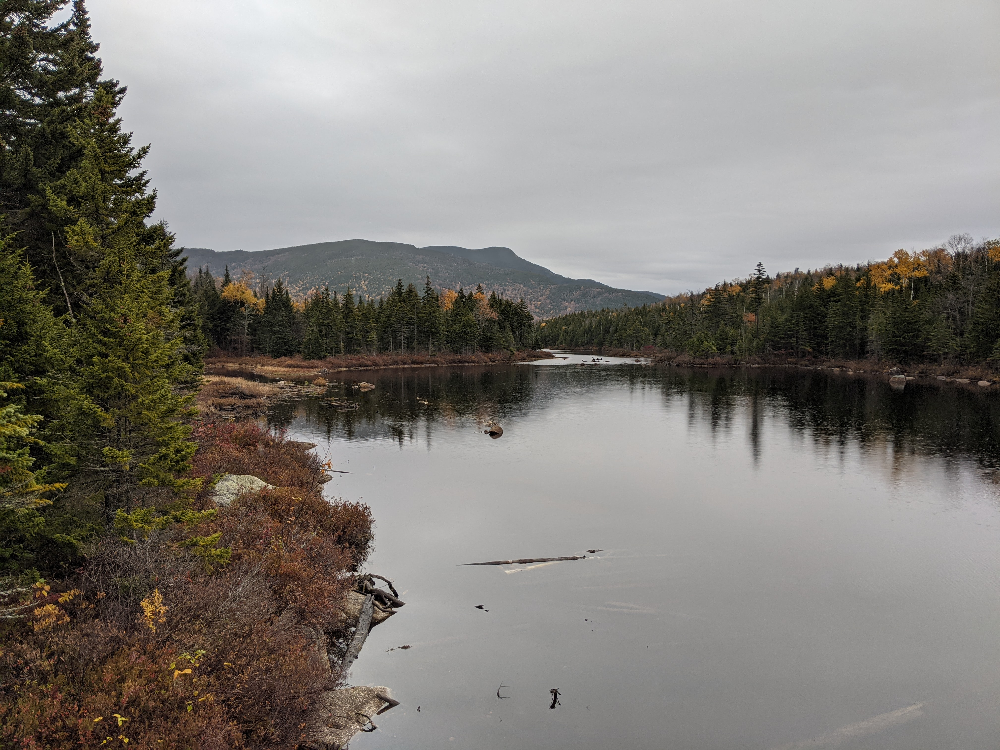
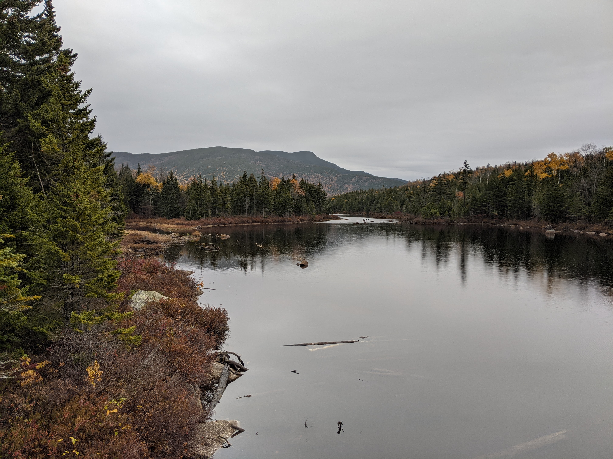
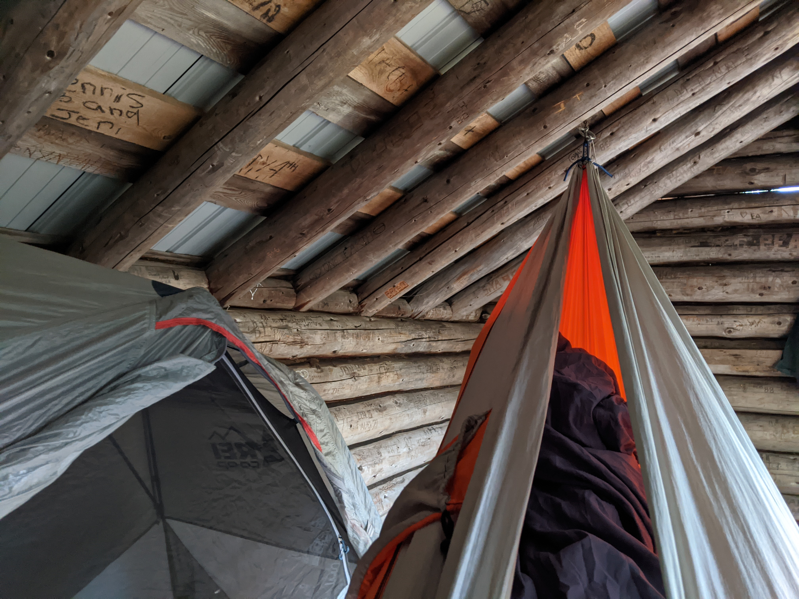
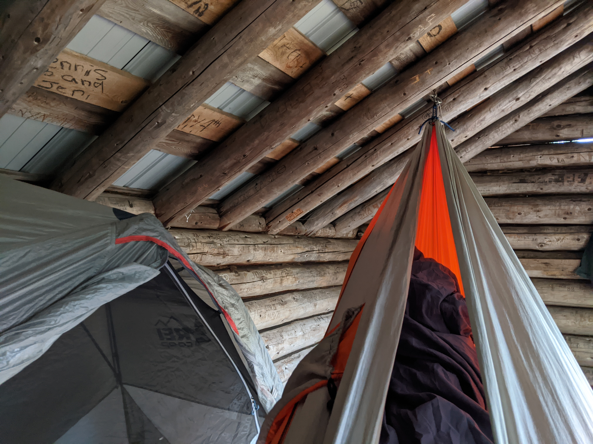
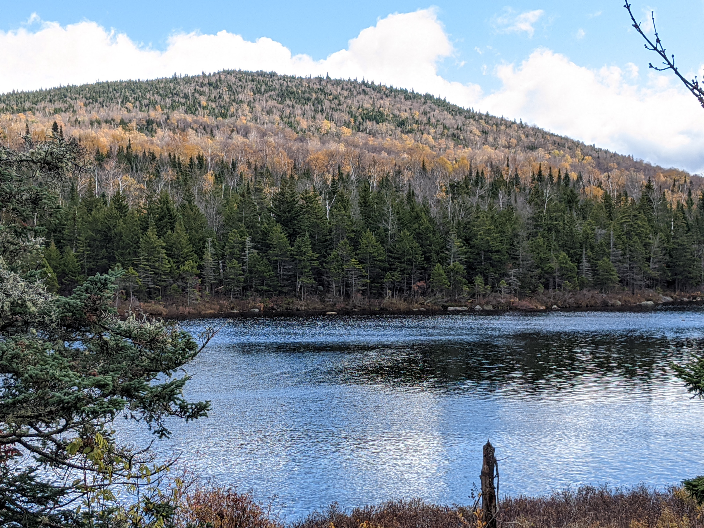
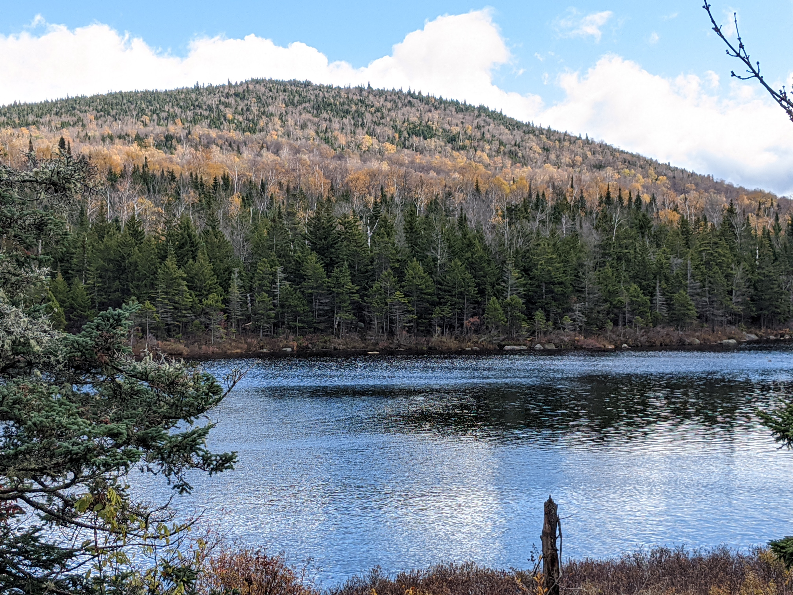

Distance
Distance Elevation
Elevation Observed Wildlife
Observed Wildlifeto
Flat Mountain Pond is a terrific place for an easy backpacking trip. For those looking for a more intense hike, the shelter can serve as a base camp to climb Sandwich Dome. Five gently sloped miles bring you to this shelter with several surrounding campsites along an oversized mountain pond. Terrific views lie along the shore, including a spectacular one of Mount Whiteface. Anyone starting from Bennett Street must also stop at Great Falls either on the way up or down.
I’m a three season (extended summer) backpacker and this was my last backpack of the year. I had just recovered from a sprained ankle on Mount Isolation a month ago and wanted to leave myself with options to take it easy or push myself. I had originally planned to camp at Black Mountain Pond, nearby, but torrential rain was forecasted and I wanted to avoid being flooded (which turners out would have been a certainty) and trapped in a tent amid a ~20 hour storm. The location also gave me the opportunity to climb Sandwich Dome during my second day without relocating my camp. My decision turned out to be the right one as I was able to easily ascend the gentle grade five miles with my pack, bear some crazy weather, and soak in some late season foliage.

The approach drive was beautiful in itself. As the sun rose, the yellow colors of mid October were beautiful, in spite of the damp weather. For those using the Bennet Street Trailhead: the street is nicely paved up to a point. In a short span, the road becomes dirt, leaves a big field on the left, and enters the woods. Immediately bear left before the bridge (Google Maps wrongly says it’s after the bridge) and continue through some private property until reaching a gate and the obvious trailhead parking.
Day 1 - 7.0 miles - 5 hours, 55 minutes


I threw on my pack, ate a small snack, and walked past the gate and onto Bennet Street Trail. The wide, flat path parallels Pond Brook and intermittently brought me close enough to the shores to enjoy a classic White Mountains stream. The foliage was terrific and was mostly composed of the light greens and yellows of beech trees. A light rain began ten minutes into my hike so my raincover stayed on my pack for the rest of the day. I tried on my frogg toggs jacket, but the humidity and hard work of carrying a pack led me to hike with only a t-shirt.


After a leisurely twenty-minute half mile, I departed left from Bennett Street Trail and onto Flat Mountain Pond Trail. The grade steepend moderately and narrowed as I embraced a more genuine sense of being in the woods. This stretch turned out to be the most challenging of my entire hike. Although I try not to hike in the rain, the beauty of the trees and the knowledge of a roof at my destination kept me in terrific spirits.


Three fifths of a mile and sixteen minutes later, I arrived at the intersection with Guinea Pond Trail, turned right and continued on Flat Pond Trail. The former railroad bed provided a wide trail and easy grade. I thoroughly enjoyed this stretch as the rain ceased and I was able to see deep through the half bare trees. One section felt November with a stretch of leafless trees. At one point I dropped my pack to soak in my return to the woods while seated on a rock.


The trail only broke from its flat nature while crossing the handful of brooks which required easy rock hopping. I didn’t cross anything of note as I first passed Gleason Trail on my right and then passed Bennett Street Trail. I caught a few glimpses of Flat Mountain South to the right of the trail. Then the trail slowly converged with Pond Brook and finally crossed it through a beautiful opening. A big flat rock face sits in the middle of the stream and I decided to take a seat and enjoy a snack there. This was the most scenic location of the day before reaching Flat Mountain Pond.
I rock hopped over another small stream and then reached a part of the trail that crossed through a flooded area. Prior to reaching this, a fellow hiker coming here said there was a dry area on the right, but there was no clue as to where that might be, so I threw on my crocs to cross the ten yards of foot deep water.


While crossing Pond Brook and its sister streams, the trail had made a hairpin turn to the right. A few more glimpses through the trees showed a couple hills that formed the base of Sandwich Dome. Some beautiful paper birches lined the trail to add yellow among a stretch of hemlocks.


After three and a quarter hours of hiking, I arrived at my destination, Flat Mountain Pond Shelter. I was happy to have the shelter, and pond, to myself. I was ecstatic that the shelter was equipped with a couple hooks at the perfect hammock length so I would be able to hang out amid the terrible oncoming storm. A well constructed and clean privy was within thirty yards as was a stream for drinking water which drained the pond. A forty yard walk took me down to the southwest shore of the pond and offered a terrific view across the water and of Flat Mountain North, which was shrouded in clouds at the moment. In addition to the shelter, there were maybe half a dozen cleared sites to set up camp. This is a great backpacking destination.
After setting up camp and hanging my supply of food, I set off to explore Flat Mountain Pond. I always feel so liberated when I can explore after dropping my pack and on this day I ventured along the damp shore. Flat Mountain Pond Trail first passed a sign welcoming me into the Sandwich Range Wilderness. The narrow trail ascended above the pond and a short distance from its shores. After staying above the pond, the trail descended back to its shores and to a boulder that can’t be missed. About a half mile from the shelter, the boulder is, by far, the best best location of Flat Mountain Pond. From it you can see Mount Whiteface to the north and the length of the pond to the south.

Since I was still looking for a place to fill my water, I initially passed up the boulder and continued along the shore. About a hundred yards later, I was able to look back upon the pond as well as the southern slopes of Sandwich Dome. I also saw a trio of American Black Ducks paddling in the rain. The trail now closely followed the shore of the pond. Eventually I made it to a stream which flows from Lost Pass to quench my thirst. This pretty source of the pond would act as the terminus of my entire hike. I turned around, stopped at the boulder mentioned earlier (click here for a 360 degree photo), and enjoyed the beautiful pond which I had all to myself on this rainy day and evening.
 

I returned to the shelter just in time. What had been intermittent drizzles throughout the day became a steady rain. I dried off, changed into dry clothes and hunkered down for the next twenty two hours. I layered up and brought both my sleeping pad, sleeping bag, and sleeping bag liner into my hammock. I had also prepared by bringing my kindle loaded with a new book, some shows and movies saved onto my phone, a battery pack to accommodate higher than usual phone use, and a fresh tank of isobutane. As the air cooled, I regularly boiled water for warmth and stored it in my Nalgene that I kept at my feet for maximum coziness.
 

After laying in darkness for a while, I started to drift off in my hammock but eventually relocated to my tent as I began to hear mice or shrew scurrying beneath me. As the night progressed, the rain intensified and I took great comfort in having a roof over my head. The temperature for the night dropped below forty and I was grateful to have packed so many layers. One forecast said it might rain up to three inches and I’m quite sure the sky dropped at least that much.
Day 2 - 2 miles - 2 hours, 40 minutes

After plenty of rest I opened my eyes to a faint brightness and eerie silence. I opened my tent to a beautiful surprise, snow! Nothing had accumulated, but the ground was thoroughly soaked through with precipitation. I reboiled my nalgene water, strapped up my crocs, threw on my Frogg Toggs, and ventured to get my hanging food. Every part of the trail was flooded with inches of water and a layer of slush. I moved quickly and cautiously while cursing myself for hanging my food so far away.
I returned with ice cold feet and moved quickly to put on all my layers which included two pairs of wool socks, long johns, hiking pants, sweat pants, a t-shirt, light hoodie, zip-up fleece, winter jacket, hat and gloves. I returned to my hammock with my sleeping mat, bag, and liner and restored my body temperature with the help of the hot nalgene which I reheated three or four times throughout the day. I didn’t leave my setup until the rain subsided early in the afternoon.

The surrounding mountains were now covered in white and it was cool to see the changing of the seasons with the colorful trees transitioning to snow covered hills. I ventured out from the shelter as the sun came out. I first walked back toward the direction I arrived and maneuvered around one flooded area. Early in the day I had decided I had no business making the near ten mile round trip to Sandwich Dome through flooded trails and with a recovering ankle. I was content to hike up and down Flat Mountain Pond as I did the day before.
 



I made an especially long stop at the boulder looking out at Mount Whiteface both on the way out and back (click here for a 360 degree photo). The colors became much brighter with the bright sun and beautiful blue sky. I navigated around flooded trails to the same stream I visited the prior day. I slept in the shelter again, keeping cozy in my layers and my warm Nalgene.

Day 3 - 4.5 miles - 3 hours, 44 minutes
The weather was much improved this morning. I was excited to see some hydrated waterfalls while taking a different path back to my car but was in no rush to leave this lovely pond. I finally hit the trail at 10:20am and bid farewell to my shelter.


The trails were wet, but no longer flooded. I began following the route on which I arrived. I anticipated needing to change into my crocs a handful of times but it was only necessary twice. I again stopped at the beautiful crossing of Pond Brook for a snack. Halfway into my hike I turned left onto Bennet Street trail. It was a more narrow trail and immediately descended fairly steeply down to Pond Brook. Much of this descent was made with the help of some stone stairs.


After another quarter mile, the trail began to follow a tributary of Pond Brook. I followed it to an absolutely gorgeous confluence into Pond Brook (click here for a 360 degree photo). I relaxed on a rock in the middle of the water for close to a half hour, delighted to be in the woods on this sunny day.


Great Falls was an even better sight after another quarter mile. Before I noticed the falls, I saw a big tree fallen fifteen feet above the brook. I recognized that I could easily climb out over it and proceeded to do just that. I walked most of the way, but my gut convinced me to scoot the final few yards over swift water and big rocks (click here for a 360 degree photo). I enjoyed my perch for a while, then moved to the fine view at the bottom of the falls. Eventually I pried myself away and continued my hike. From here, Pond Brook flowed more gently and the trail meandered away from its shore.


I reached the start of Flat Mountain Pond Trail and returned to the flat, wide trail which began my hike two days ago. I took my time and stopped at the brook’s shores when the trail allowed it. I made it back to the gate and the trailhead with my car waiting.


My partner and I had reserved a house along Pea Porridge Pond in Madison for another three nights to celebrate my new job. A soft couch and warm fireplace awaited me there. This hike had been one my most leisurely paced backpacking hikes and, in a way, I was grateful for my ankle injury for coercing me into my slow pace to take in the beauty of the woods instead of merely covering miles.
I couldn't pass up the opportunity to stop at the gorgeous Lake Chocorua as I drove by